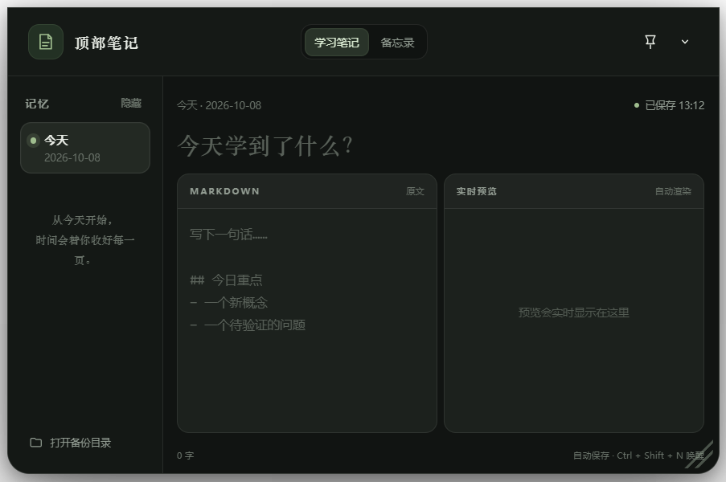
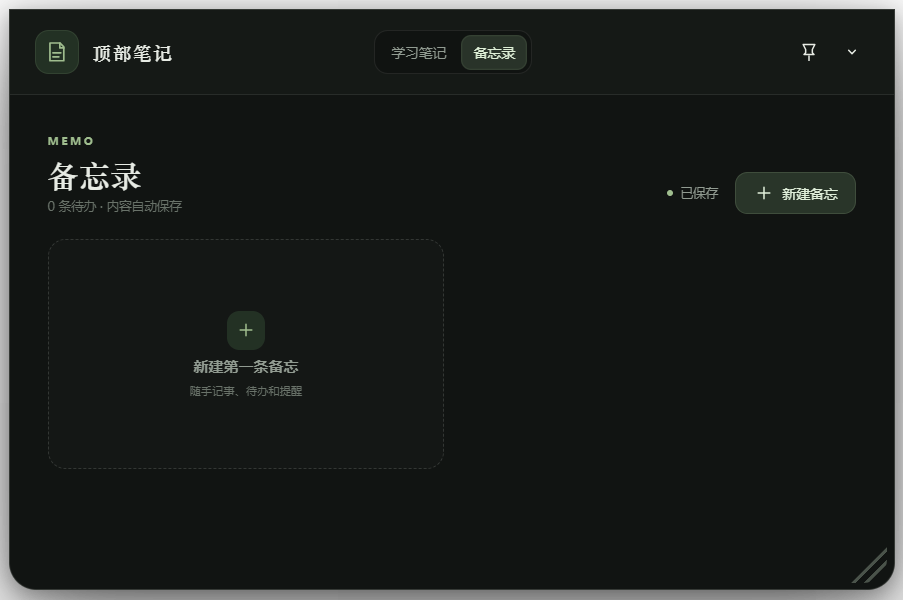
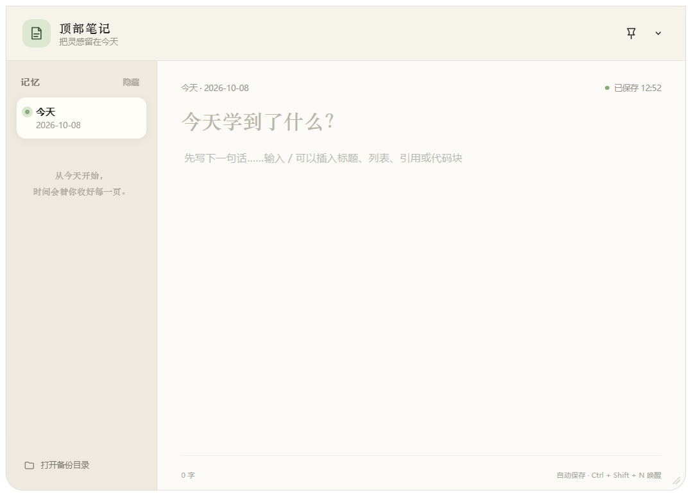

顶部召回
鼠标移到屏幕顶部中央即可展开，窗口自动回到上次的尺寸和位置。
TopNote 是一个从屏幕顶部展开的学习笔记与备忘录工具。记录不打断思路，回顾每天真正学到的东西。
鼠标移到顶部中央，窗口从视线里展开。写完自动保存，第二天继续回看。
TopNote 把记录动作缩短到几秒钟，让笔记留在你的工作流里，而不是另一个需要打开的窗口。
鼠标移到屏幕顶部中央即可展开，窗口自动回到上次的尺寸和位置。
标题、列表、代码块和快捷键都在同一个轻量编辑区里完成。
学习笔记按日期保存，每天结束时自动落盘，回顾时不再从零开始。
工作、学习、生活分开管理，随手记下的事项也能很快找到。
窗口圆角、可移动、可全屏。你可以在偏好设置里切换浅色主题，让它适应一天中的不同光线。


